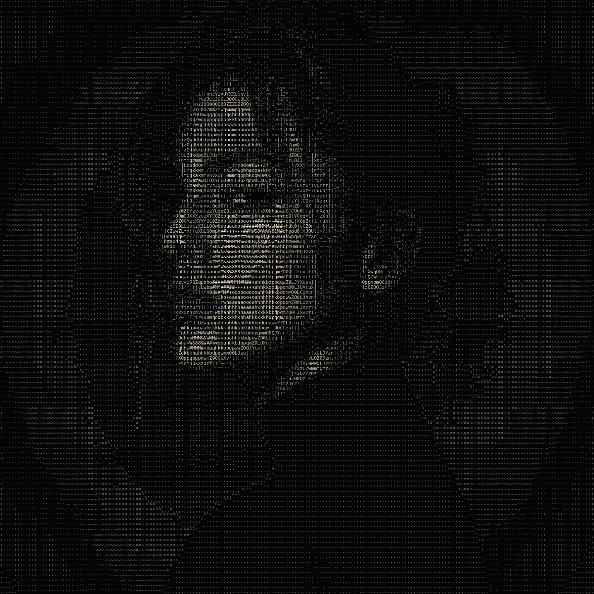
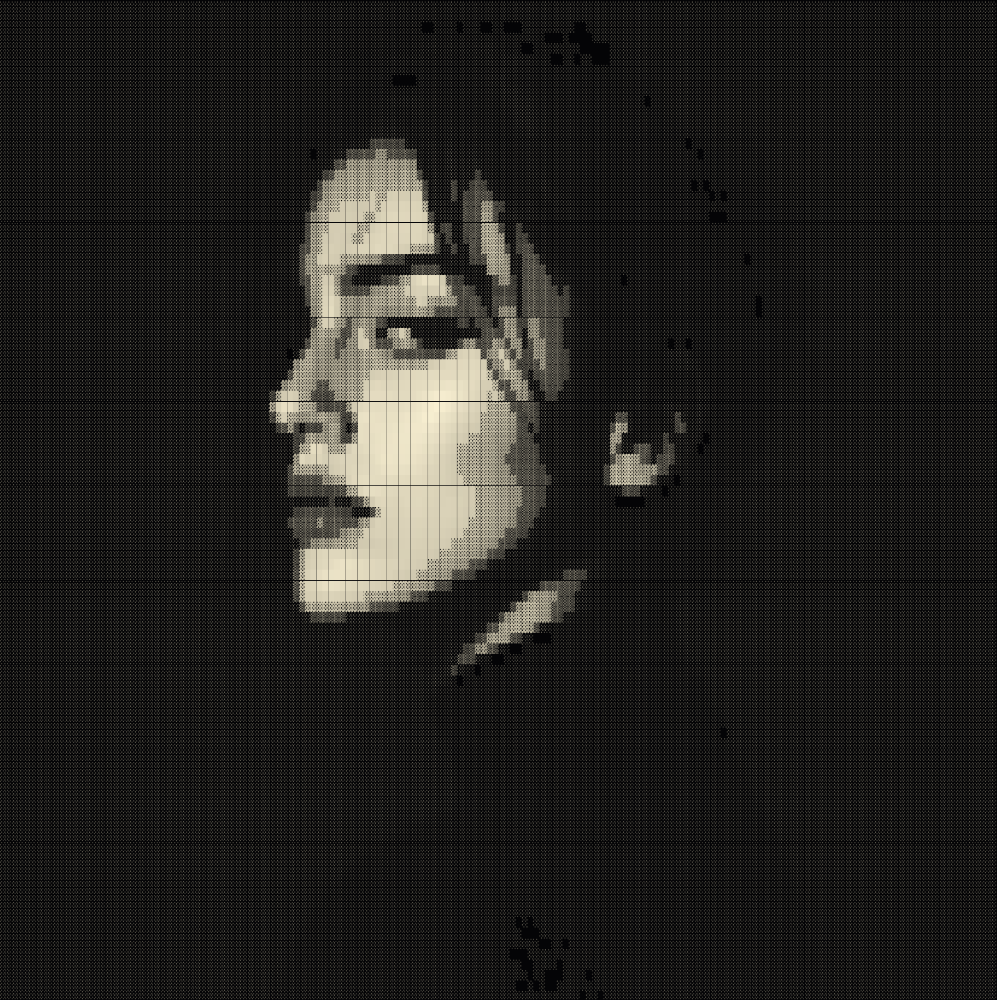
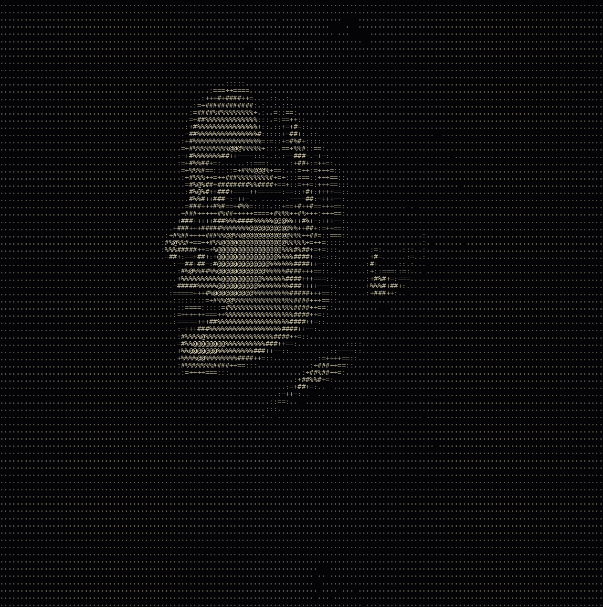
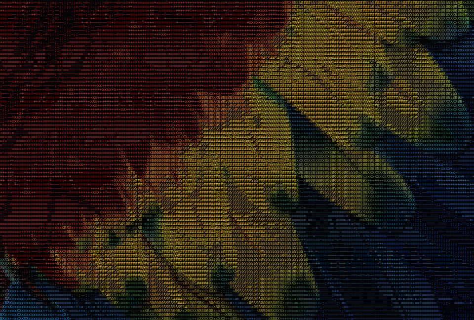
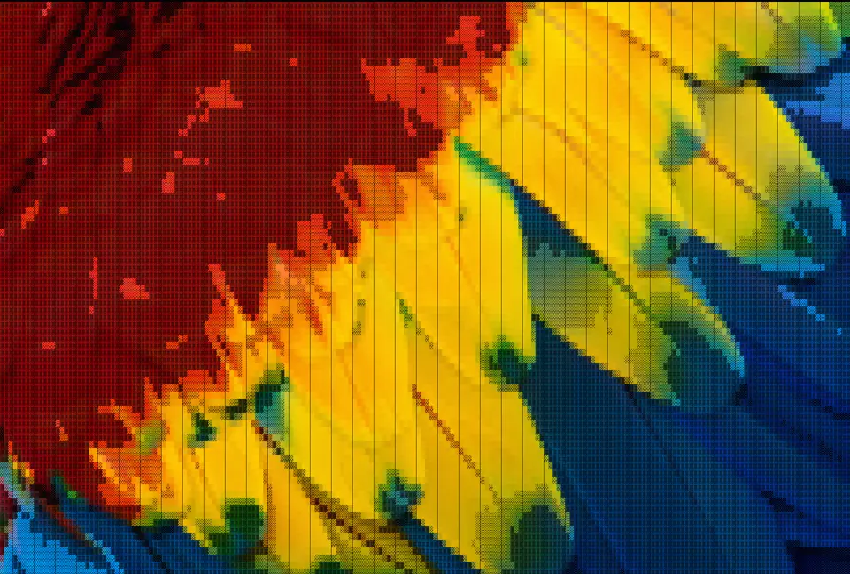
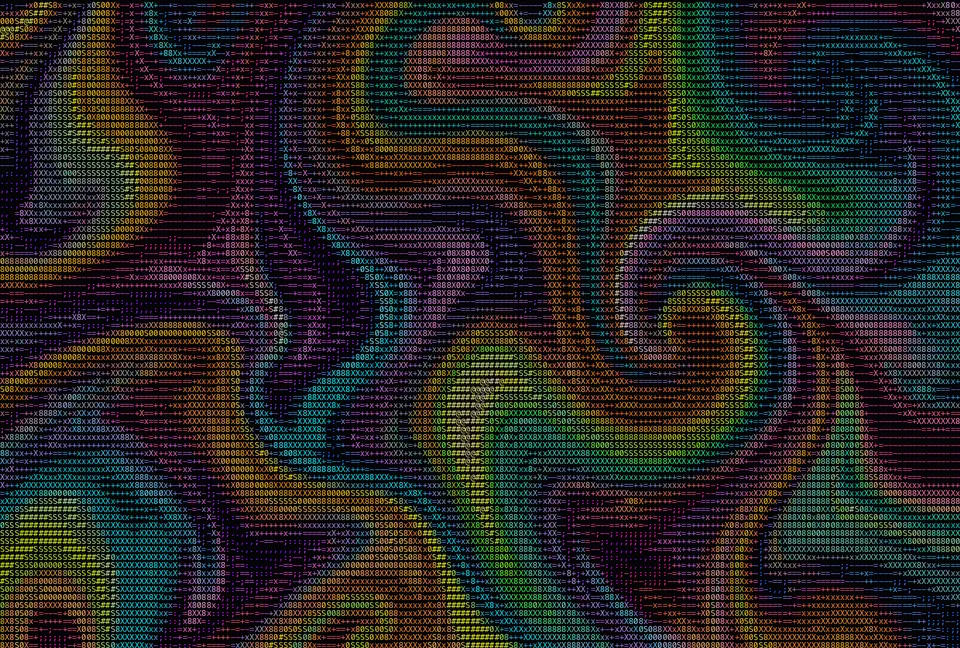
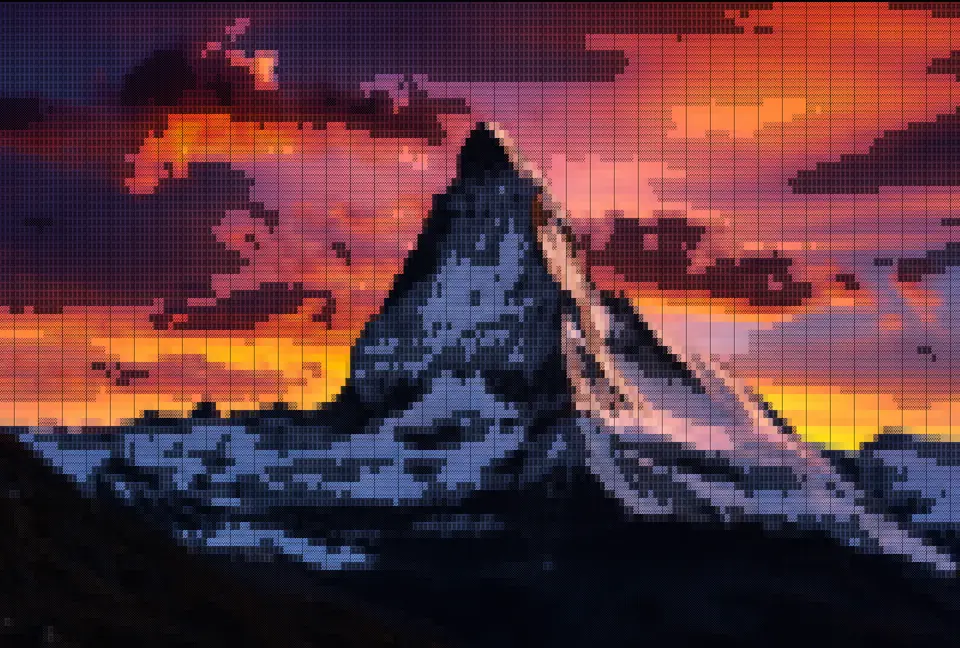
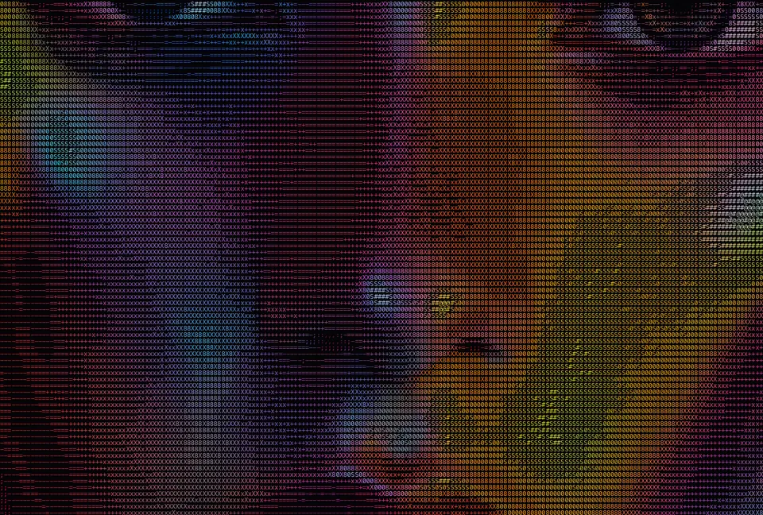
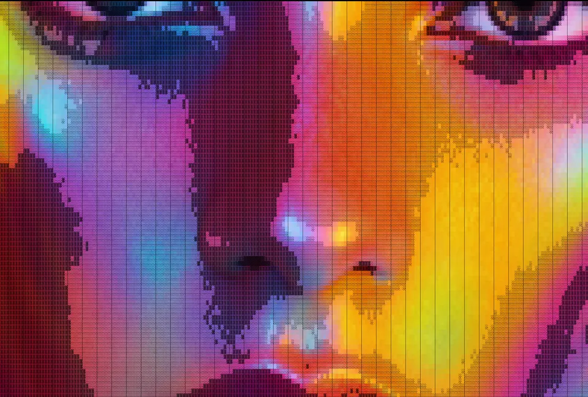

Before
Before
 After
After
Turn any photo into ASCII art on your own device, or describe one and let AI create it — no signup, nothing uploaded.
/ IMAGE TO ASCII
Upload a photo, or describe one and let AI create it — then convert it to text art right in your browser. Free, no signup.
how-it-works
ASCII art is a picture made entirely out of text characters. The image to ASCII converter on this page looks at your photo one small cell at a time, measures how bright each cell is, and swaps it for a character from a ramp that runs from dense to sparse — a solid @ stands in for the darkest areas and a light . or a blank space for the brightest. Line those characters up in a grid and the original picture reappears, drawn in nothing but type. Because every step runs in your browser on an HTML5 canvas, the image to ASCII conversion is instant and your photo never leaves your device.
There are two ways to feed the image to ASCII tool. The first is to upload your own picture — drag a JPG, PNG or WebP onto the drop zone, or click to browse, and it is converted the moment it loads. The second is to describe an image in words and let AI create it for you: the prompt is sent to an image model, the picture comes back, and it is turned into ASCII art automatically. AI generation is handy when you don’t have the right source photo on hand and just want a clean, high-contrast subject that reads well as text.
Not every image to ASCII conversion should look the same, so the tool ships four character styles. Characters is the classic look, mapping brightness to a configurable ramp such as @#S08Xx+=-;:,. Detailed uses a much larger set of glyphs for fine gradients and smooth shading. Block Chars swaps in half and full block glyphs for a bold, dense, pixel-block feel, and Minimal keeps only a handful of characters for a clean, high-contrast result. On top of the style you can push the detail slider to change how many characters make up the grid, flip the mapping with Invert, and turn Color on or off to either sample the original colours or render crisp monochrome text art.
A few habits make a big difference. High-contrast images with one clear subject convert best — a face, an animal, a logo or a bold silhouette will always read more clearly than a busy, low-contrast scene. Simple backgrounds help too, since empty space becomes blank characters and lets the subject stand out. If your first ASCII art looks muddy, raise the detail, try the Detailed character set, or toggle Invert, because dark-on-light and light-on-dark photos each favour a different setting. When you are happy, download the result as a PNG image or copy it as plain text to paste anywhere.
Text art has a life far beyond the terminal. People drop ASCII renders into GitHub READMEs and code comments, use them as retro website hero backgrounds and 404 pages, post them on social media for a distinctive, on-brand look, print them as posters and zines, and set them as desktop or phone wallpapers. Because the output of the image to ASCII converter is just characters (or a PNG of them), it fits anywhere text or an image can go — a post, a chat message, a slide or a sticker.
The characters that make up ASCII art are chosen for their visual weight — how much ink each one puts on the page. A dense character like @, # or a block glyph reads as a dark tone, while a thin character like ., :, ; or a blank space reads as a light tone. Arrange them from dark to light and you have a grayscale ramp that any brightness value can map onto. The classic ramp is @#S08Xx+=-;:,. but you can type your own set of characters into the image to ASCII tool and watch the output change in real time: a longer ramp gives smoother gradients, and a shorter one gives a punchier, more graphic look.
Image to ASCII art and pixel art both simplify a picture into a grid, but they use different building blocks. ASCII art fills each cell with a text character chosen by brightness, so the result reads like printed type and can be copied as plain text. Pixel art fills each cell with a solid block of colour, so it reads like an 8-bit video game and only works as an image. This converter focuses on the text-character approach, which is why every image to ASCII result can be exported as a PNG or copied straight into a README, a chat or a code comment.
The image to ASCII converter is completely free. There is no signup, no watermark and no export limit, and the ASCII conversion itself runs entirely on your own device, so your uploaded photo is never sent to a server. Only the optional AI image generation talks to the network, and even then only your short text prompt is sent. Open the tool at the top of the page, drop in an image or describe one, and you have shareable ASCII art in seconds.
styles
Turn your image into ASCII art in four built-in character styles — tune the detail, invert and color, then export.
Classic ASCII art — characters mapped to brightness with a configurable ramp @#S08Xx+=-;:,.

A dense character set for fine detail and smooth tonal gradients across your ASCII art.

Half and full block glyphs (█▓▒░) for a bold, high-density pixel-block look.

A sparse character set for clean, minimal, high-contrast ASCII output.
If you have a specific style in mind and you would like to have it added to Image to ASCII, ping me or email me here.
usecases


Turn a photo into an ASCII portrait for your X, Discord or Reddit profile, or a post that actually stops the scroll. Copy it as plain text or save a crisp PNG.


Make a one-of-a-kind desktop or phone wallpaper from any picture. Pick a style, push the detail, and download a high-resolution PNG, no sign-up and no watermark.


Blow an ASCII render up into a poster, sticker or zine page. The high-contrast character grid stays razor-sharp all the way to large-format print.
faqs
Quick answers about Image to ASCII — what it does, how it works, privacy and pricing.
create-art
Every slider, every style, every effect updates the preview instantly, export at up to 4× resolution. Free forever.
Try it out now